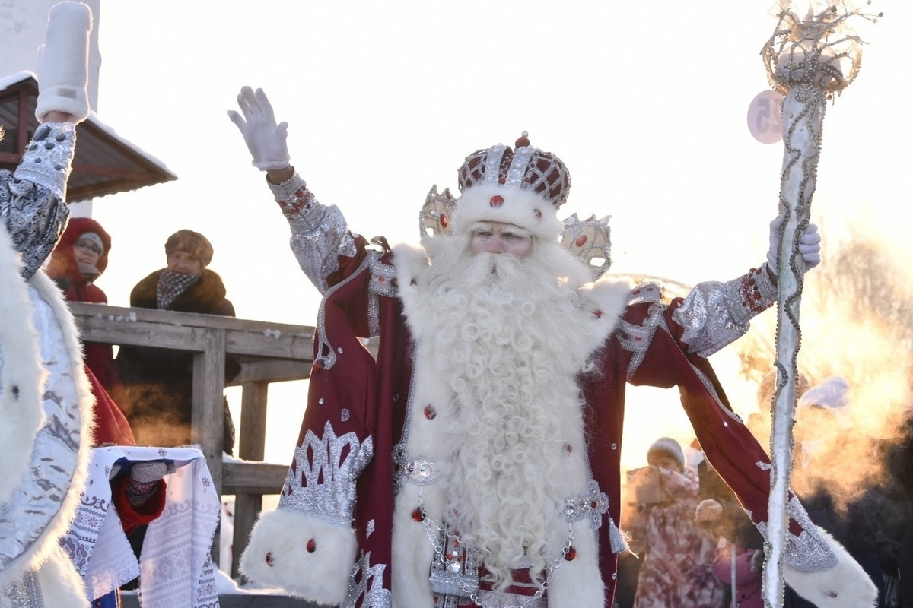
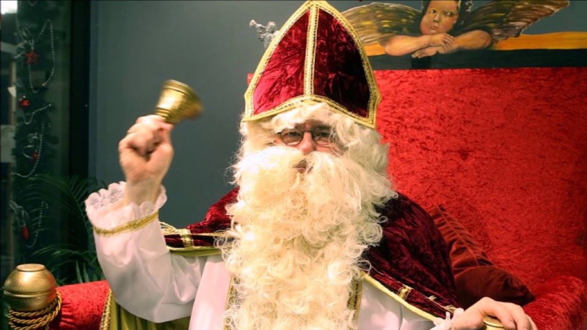
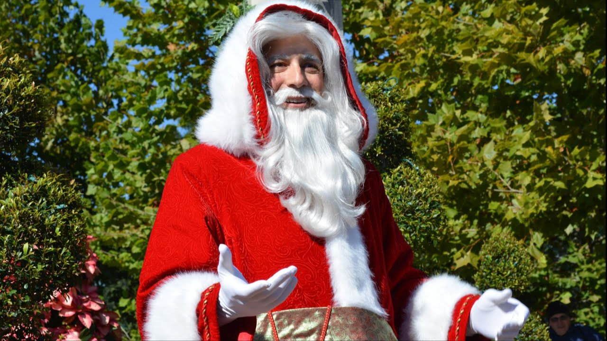
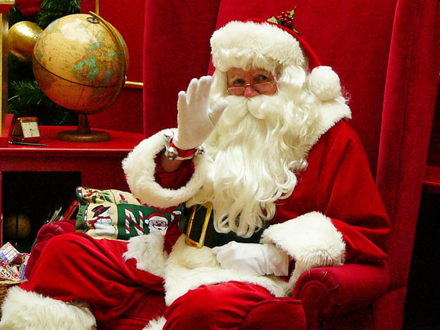
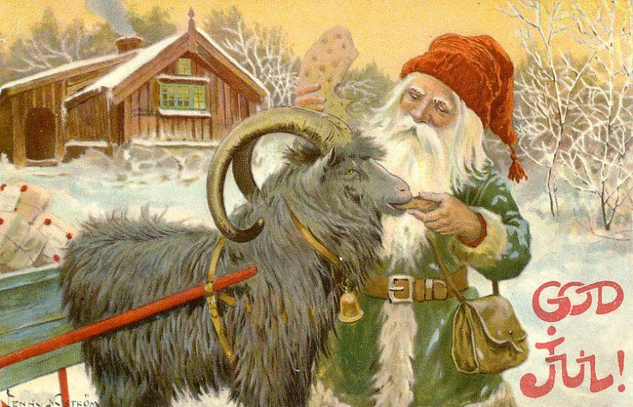
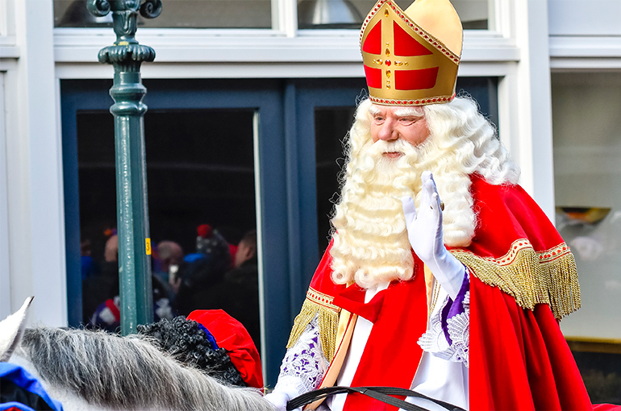

Новый Год
Новый Год
Новый Год
Новый Год
Русский Дед Мороз
В России главного зимнего волшебника зовут Дедушка Мороз. Это один из самых древних и самобытных новогодних персонажей, чей образ уходит корнями в языческую мифологию.
Немецкий Дед Мороз
В Германии Деда Мороза знают как Вайнахтсмана, строгого, но справедливого рождественского гостя. Его появление сопровождается запахом печенья и горячего вина. Иногда рядом с ним идет Кнехт Рупрехт, персонаж, который следит за примерным поведением детей.
Французский Дед Мороз
Французский Дед Мороз называется Пэр-Ноэль. Он раскладывает подарки в ботинки и любит, когда его ждут заранее, украшая камин и оставляя угощение. Французские улицы в декабре полны огней, и образ Пэра Ноэля стал частью этой праздничной поэтики.
Итальянский Дед Мороз
В Италии детей радует Баббо Натале, но у итальянцев есть и своя особая традиция. В начале января появляется Бефана, старушка с добрым сердцем, которая приносит сладости в аккуратно развешанные чулки.
Финский Дед Мороз
В Финляндии снежные елки и суровый север рождают свой характер праздника. По-фински Дедушку Мороза зовут Йоулупукки ("Рождественский козел"), и это один из самых известных зимних персонажей Европы. Он обитает в Лапландии, на горе Корватунтури, где трудится его деревня помощников.
Шотландский Дед Мороз
В Шотландии есть свой рождественский старец — Yule Father, персонаж древних зимних обрядов, который обычно ассоциируется с богом Одином. Его образ формировался веками, сохранив связь с народными праздниками зимнего солнцестояния.
Нидерландский Дед Мороз
В Нидерландах главного героя декабря называют Синтерклаас ("Святой Николай"). Он прибывает на корабле из Испании в середине ноября, и его ждут так же трепетно, как в других странах ждут Деда Мороза. Подарки раздаются в ночь на 5 декабря, и эта традиция старше многих современных зимних образов.
Американский Дед Мороз

В США главного зимнего волшебника зовут Санта-Клаус (Santa Claus). Его образ, каким мы его знаем сегодня, — это уникальный американский сплав, сформированный в XIX–XX веках.